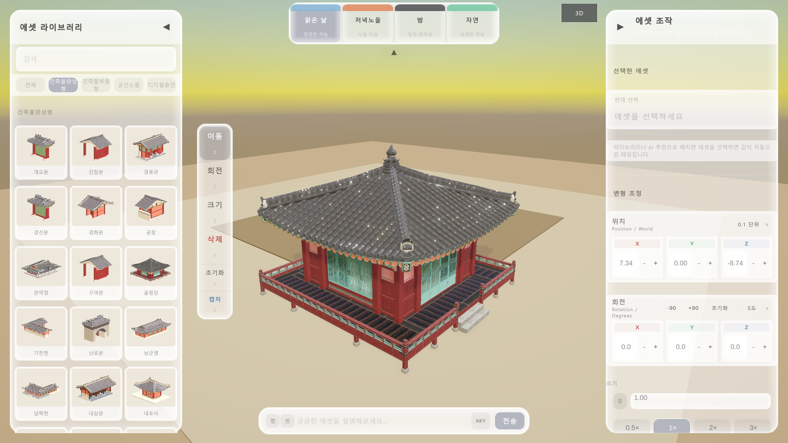
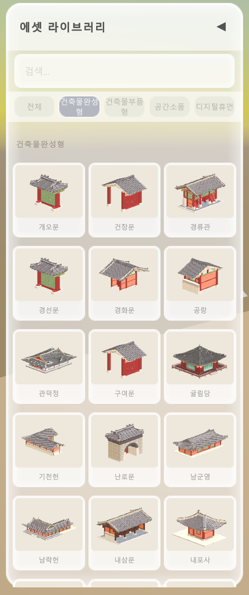
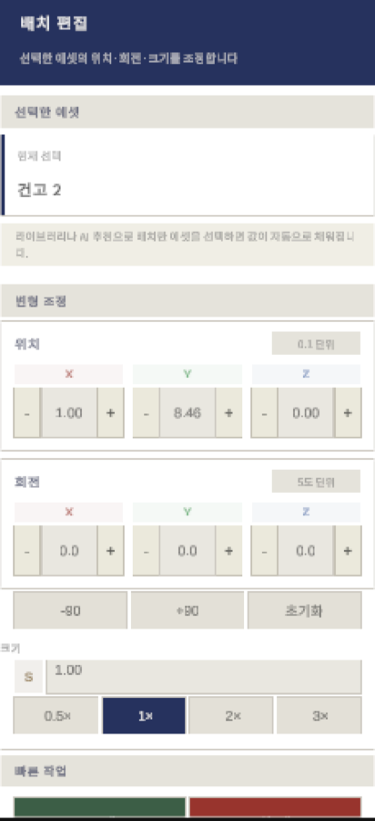
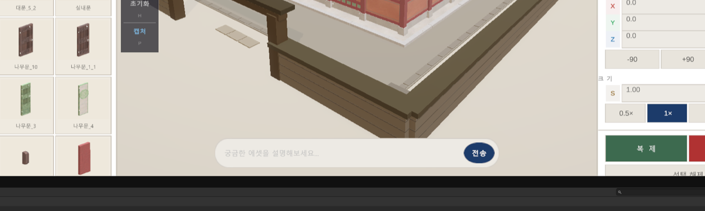

HanokBuilder
한국 전통 건축 공간을 3D로 직접 조립하고 편집하는 인터랙티브 제작 도구입니다. 전문 3D 소프트웨어 지식 없이도 국가 문화공공데이터 기반 에셋을 배치하고 AI 추천으로 장면을 구성하며 PNG로 저장할 수 있습니다.

완성형 한옥부터 개별 부품, 소품, 디지털 휴먼까지 문화공공데이터 기반 에셋
자연어 입력 한 줄로 Claude Haiku가 최대 30개 관련 에셋 즉시 추천
한옥 마당 · 사랑채 · 조선 장터 · 전통 정원 — 원클릭 전환
이동 · 회전 · 크기 핸들 조작과 수치 입력으로 정밀하게 배치 편집
CtrlZ로 최대 20단계까지 작업 이력 복원
UI 패널 제외, 뷰포트 화면만 바탕화면에 날짜·시간 파일명으로 저장
- 엔진 / 렌더러
- Unity 6 (6000.3.16f1) · Universal Render Pipeline (URP)
- AI 기능
- Claude Haiku API — 자연어 프롬프트로 에셋 카탈로그에서 최대 30개 추천
- 에셋 원천
- 문화포털 메타버스데이터랩 공개 3D 데이터 (한옥 건축·소품·디지털 휴먼)
- 주요 활용 대상
- 게임 개발자·인디 팀, 교육자·학생, 웹툰 작가, 메타버스 기획자, 박물관·문화기관
바로 체험하기
설치 없이 브라우저에서 HanokBuilder를 직접 실행할 수 있습니다.
최신 Chrome · Firefox · Edge 브라우저에서 가장 원활하게 동작합니다. 처음 로딩 시 Unity WebGL 에셋을 다운로드하므로 수 초~수십 초가 소요될 수 있습니다.
화면 구성
실행 화면은 7개 영역으로 나뉩니다. 번호를 기준으로 각 영역의 역할을 확인하세요.
-
에셋 라이브러리
카테고리와 검색으로 에셋 탐색. 썸네일 클릭 시 즉시 배치.
-
검색 · 카테고리 필터
한글 키워드로 이름·태그 즉시 필터링. 완성형/부품형 탭 전환.
-
배경 프리셋 패널
한옥 마당 · 사랑채 · 조선 장터 · 전통 정원 4가지 전환.
-
3D 뷰포트
에셋을 배치하고 카메라를 조작하는 주 편집 공간.
-
편집 도구 툴바
이동·회전·크기·삭제 도구 + 캡처·초기화. 드래그로 위치 이동 가능.
-
부재 정보 패널
선택 에셋 이름·위치·회전·크기 수치 확인 및 조정.
-
AI 추천 프롬프트 바
자연어 입력 시 관련 에셋 최대 30개 추천 및 배치.
처음 시작하는 5단계
실행하면 한옥 마당 배경이 자동 생성됩니다. 아래 순서대로 따라가 보세요.
-
배경 선택
상단 배경 프리셋 패널에서 원하는 공간을 고릅니다. 배경이 바뀌어도 배치한 에셋은 유지됩니다.
-
에셋 탐색 및 배치
좌측 라이브러리에서 카테고리를 탐색하거나 검색창에 키워드를 입력합니다. 썸네일 클릭 시 뷰포트 중앙에 즉시 배치됩니다.
-
AI로 에셋 발견
하단 프롬프트 바에 원하는 장면을 입력합니다. 예: "나무로 둘러싸인 집", "조선 장터 상인과 소품". 결과를 클릭하면 즉시 배치됩니다.
-
배치 편집
툴바에서 이동 1 · 회전 2 · 크기 3 도구로 정밀 조정합니다. 실수하면 CtrlZ로 최대 20단계 되돌릴 수 있습니다.
-
결과 저장
P키 또는 툴바 캡처 버튼을 누릅니다. 뷰포트 화면이
Hanok_yyyyMMdd_HHmmss.png로 바탕화면에 저장됩니다.
AI 추천은 Claude API 키 설정이 필요합니다. 키가 없으면 키워드 기반 로컬 추천으로 자동 대체됩니다.
배경 프리셋
화면 상단 중앙 패널에서 전환합니다. 배경은 교체되지만 사용자가 배치한 에셋은 그대로 유지됩니다.
| 프리셋 | 공간 특징 | 추천 활용 |
|---|---|---|
| 한옥 마당 기본 | 조선시대 한옥 마당 분위기의 야외 공간 | 일반 배치 테스트, 전체 구성 확인 |
| 사랑채 | 전통 사랑방 구조의 실내 공간 | 실내 소품 배치, 교육 자료 제작 |
| 조선 장터 | 노점과 행인이 오가는 시장 분위기 | 상인·소품·캐릭터 배치, 게임 씬 레퍼런스 |
| 전통 정원 | 연못·정자·수목이 어우러진 외부 정원 | 자연 요소 배치, 경관 구성 |
에셋 라이브러리

카테고리 구조
| 완성형 | 봉수당, 사랑채 등 한옥 건물 전체 모델 |
|---|---|
| 부품형 | 보 · 단청 · 장식 · 문 · 바닥 · 난간 · 마루 · 자연물 · 지붕 · 벽 · 목재 등 |
사용 방법
- 검색창에 한글 키워드를 입력하면 이름·태그 기준으로 즉시 필터링됩니다.
- 카테고리 탭을 선택하면 해당 분류만 표시됩니다.
- 썸네일을 클릭하면 3D 뷰포트 중앙에 즉시 배치됩니다.
- 썸네일은 실제 3D 모델을 촬영해 순차 생성합니다. 처음 실행 시 잠시 기다리세요.
카메라 조작
Unity Editor Scene View와 동일한 방식입니다. 선택한 에셋을 기준점으로 카메라가 공전하는 오비트 구조입니다.
마우스
| 시점 회전 | 우클릭 드래그 · Alt + 좌클릭 드래그 |
|---|---|
| 화면 이동 | 중간버튼 드래그 · Shift + 우클릭 드래그 |
| 확대/축소 | 스크롤 휠 (커서 방향으로 이동) |
| 정밀 줌 | Ctrl + 스크롤 |
키보드 이동 (우클릭 유지 중)
| 앞뒤 | W / S |
|---|---|
| 좌우 | A / D |
| 위아래 | E / Q |
| 빠른 이동 | Shift + 이동키 (3배속) |
고정 시점 (Numpad)
| Numpad 1 | 정면 뷰 (직교) — 높이 정렬 확인 |
|---|---|
| Numpad 3 | 우측면 뷰 (직교) — 깊이 정렬 확인 |
| Numpad 7 | 탑뷰 (직교) — 평면 배치·대칭 확인 |
| Numpad 9 | 후면 뷰 (직교) |
| Numpad 5 / 0 | 원근 뷰 (기본) |
포커스
| F | 선택 에셋을 화면 중앙에 맞추어 카메라 자동 이동 |
|---|---|
| Z | 배치된 모든 에셋이 화면에 들어오도록 카메라 조정 |
시점 전환과 포커스 이동은 목표에 가까워질수록 자연스럽게 감속합니다. 급격한 화면 전환 없이 공간 감각을 유지합니다.
편집 도구
좌측 플로팅 툴바에서 선택하거나 숫자 단축키로 전환합니다. 툴바는 드래그로 화면 어디로든 이동 가능합니다.
| 도구 | 단축키 | 동작 |
|---|---|---|
| 이동 | 1 | 에셋 드래그 시 마우스 방향으로 레이캐스트 발사. 다른 에셋 표면 위에 올릴 수 있고, 표면 없으면 Y=0 평면에 자동 스냅. |
| 회전 | 2 | X(빨강)·Y(초록)·Z(파랑) 3색 원형 링 핸들 드래그. 카메라 시점에 따른 감도 자동 보정. |
| 크기 | 3 | 축 방향 큐브 핸들(단축 변경) / 중앙 구형 핸들(균일) / Ctrl+스크롤 / 에셋 상단 플로팅 핸들 드래그. |
| 삭제 | 4 | 에셋 클릭 즉시 삭제. |
| 회전 초기화 | H | 선택 에셋의 회전값을 0으로 복원. |
| 캡처 | P | 현재 뷰포트를 PNG로 바탕화면에 저장. UI 패널 제외. |
추가 단축키
| CtrlD | 선택 에셋 복제 — 원본에서 오른쪽 2m 위치에 생성 |
|---|---|
| CtrlZ | 되돌리기 — 최대 20단계 |
| Esc | 선택 해제 |
에셋 배치 자동 보정
- 크기 정규화 — FBX 단위 차이로 크기가 지나치게 크면 자동으로 표준 크기로 정규화합니다.
- 바닥 정렬 — 에셋 바닥면이 항상 Y=0 평면에 정확히 닿도록 자동 조정됩니다.
- 선택 링 — 에셋 선택 시 바닥 둘레에 남색 원형 링이 나타나 위치와 범위를 표시합니다.
부재 정보 패널

에셋을 클릭하면 해당 부재의 한글 표시명과 변형 조정 영역이 표시됩니다. 선택 전에는 "부재를 선택하세요" 안내가 나타납니다.
| 위치 | X·Y·Z 입력 칸 직접 입력 또는 -/+ 버튼. 간격 선택: 0.05 / 0.1 / 0.5 / 1m |
|---|---|
| 회전 | 각도 직접 입력 또는 -90°/+90° 버튼. 간격: 1 / 5 / 15 / 45도. 초기화로 전체 0 복원. |
| 크기 | 단일 입력으로 균일 조정. 0.5× 1× 2× 3× 배율 버튼 즉시 적용. |
| 빠른 작업 | 패널 하단 복제 · 삭제 · 선택 해제 버튼 (도구 전환 불필요) |
입력 필드 간 이동: Tab 키
AI 에셋 추천

화면 하단 중앙의 프롬프트 바에 원하는 분위기를 입력하면 Claude Haiku 모델이 에셋 카탈로그에서 최대 30개를 추천합니다. 결과는 프롬프트 바 위 가로 스크롤 목록으로 표시되며, 클릭 시 즉시 배치됩니다.
입력 예시
| "나무로 둘러싸인 집" | → 수목·정자·담장 관련 에셋 추천 |
| "조선 장터 상인과 바구니, 깃발" | → 행상인·전통 수레·깃발 추천 |
| "아치형 대문 주변 풍경" | → 문·기와·돌담 관련 에셋 추천 |
작동 방식
| 모델 | Claude Haiku — 카탈로그 매칭처럼 정형화된 작업에 최적화된 속도·비용 효율 |
|---|---|
| 추천 범위 | 현재 등록된 에셋 카탈로그 내부로만 제한. 존재하지 않는 에셋은 추천하지 않습니다. |
| 응답 형식 | 구조화된 JSON으로 반환. assetKey가 Unity 에셋과 자동 매칭됩니다. |
| 오프라인 대체 | API 키 미설정 시 키워드 기반 로컬 추천이 자동 작동합니다. |
AI는 후보 에셋을 추천하고, 사용자가 목록에서 직접 선택해 배치합니다. 탐색 진입장벽을 낮추는 보조 기능입니다.
화면 저장
툴바 캡처 버튼 또는 P키로 현재 뷰포트를 이미지로 저장합니다.
| 저장 위치 | 사용자 바탕화면 |
|---|---|
| 파일명 형식 | Hanok_yyyyMMdd_HHmmss.png |
| 포맷 | PNG (무손실) |
| 캡처 범위 | 3D 뷰포트만 저장. 좌측·우측 UI 패널 및 툴바는 제외됩니다. |
배경 선택 → 에셋 배치 완료 → Numpad 1/3/7로 구도 확인 → F로 주요 에셋 초점 → P로 캡처.
단축키 전체 목록
| 단축키 | 기능 |
|---|---|
| 1 | 이동 도구 — 에셋 드래그 배치 |
| 2 | 회전 도구 — 3축 링 핸들 드래그 |
| 3 | 크기 도구 — 핸들 드래그 / Ctrl+스크롤 |
| 4 | 삭제 도구 — 클릭 즉시 삭제 |
| H | 선택 에셋 회전값 초기화 |
| P | 뷰포트 캡처 → 바탕화면 PNG 저장 |
| CtrlD | 선택 에셋 복제 (오른쪽 2m) |
| CtrlZ | 되돌리기 (최대 20단계) |
| Esc | 선택 해제 |
| 단축키 | 기능 |
|---|---|
| 우클릭 드래그 | 시점 회전 (오비트) |
| 중간버튼 드래그 | 화면 이동 (패닝) |
| 스크롤 휠 | 확대/축소 |
| Ctrl + 스크롤 | 정밀 줌 |
| W / S | 앞뒤 이동 (우클릭 유지) |
| A / D | 좌우 이동 (우클릭 유지) |
| E / Q | 위아래 이동 (우클릭 유지) |
| Shift + 이동키 | 3배속 이동 |
| F | 선택 에셋 화면 중앙 포커스 |
| Z | 배치된 전체 에셋 프레임 보기 |
| 단축키 | 기능 |
|---|---|
| Numpad 1 | 정면 뷰 (직교) — 높이 정렬 |
| Numpad 3 | 우측면 뷰 (직교) — 깊이 정렬 |
| Numpad 7 | 탑뷰 (직교) — 평면 배치 확인 |
| Numpad 9 | 후면 뷰 (직교) |
| Numpad 5 / 0 | 원근 뷰 (기본) |
기둥 간격 확인 → Numpad 7 탑뷰 · 지붕 높이 맞추기 → Numpad 1 정면뷰 · 처마 깊이 조정 → Numpad 3 우측뷰
문제 해결
에셋 라이브러리에 썸네일이 보이지 않습니다
썸네일을 클릭해도 에셋이 배치되지 않습니다
Assets/HanokBuilder/Resources/HanokAssets/ 경로에 있는지 확인하세요. FBX 파일은 Prefab으로 변환 후 해당 경로에 넣어야 자동 로드됩니다.
AI 추천 기능이 작동하지 않습니다
에셋이 화면에 보이지 않거나 엉뚱한 위치에 있습니다
회전 핸들 링이 지나치게 크거나 작습니다
Scale Factor = 0.01로 설정하는 것입니다.
한글이 깨져 보이거나 폰트가 이상합니다
TextAlignmentOptions.MidlineCenter는 제거되었으므로 TextAlignmentOptions.Center를 사용해야 합니다.
에셋을 클릭해도 선택되지 않습니다
SelectableAsset 컴포넌트가 부착되어야 합니다. AttachSelectable() 함수를 통해 자동으로 처리됩니다.
이동·회전이 의도와 다르게 작동합니다
문화데이터 출처
HanokBuilder의 에셋 라이브러리는 국가기관이 공개한 문화공공데이터를 원천으로 합니다.
| 활용 데이터 | 제공기관 | 플랫폼 |
|---|---|---|
| 건축물 완성형 3D 데이터 | 한국문화정보원 | 문화포털 메타버스데이터랩 |
| 건축물 부품형 3D 데이터 | 한국문화정보원 | 문화포털 메타버스데이터랩 |
| 디지털 휴먼 데이터 | 한국문화정보원 | 문화포털 메타버스데이터랩 |
| 공간소품 3D 오브젝트 | 한국문화정보원 | 문화포털 메타버스데이터랩 |
수집한 데이터는 에셋 식별자(assetKey), 한글 표시명, 카테고리, 검색 태그로 재구조화해 라이브러리 검색과 AI 추천에서 동일하게 활용합니다. 원본 FBX·텍스처 파일은 Git LFS 용량 제한을 고려해 코드와 분리 관리합니다.